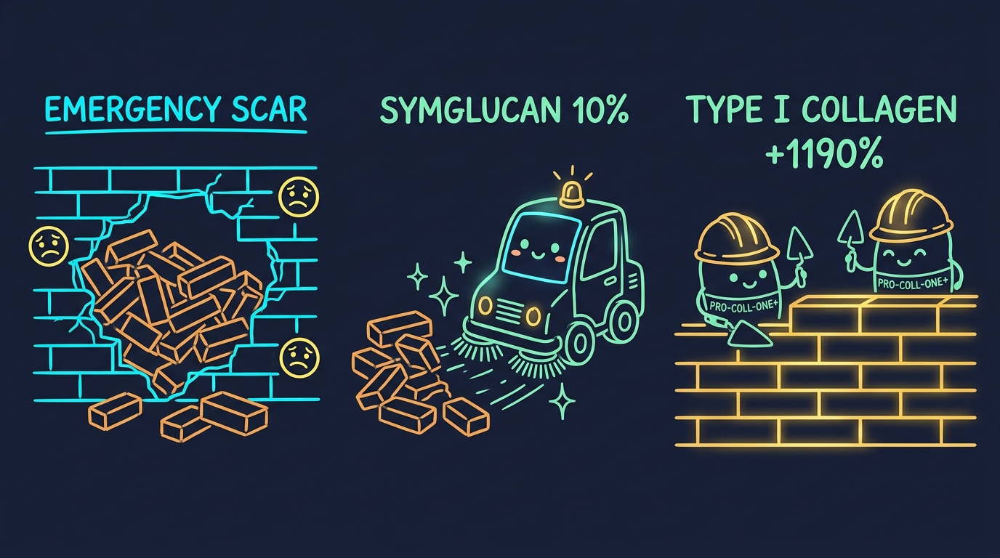

The Emergency Brick Wall & The Clean-Up Crew
How active biological signaling transforms a tangled scar pile into flat, smooth skin.

Have you ever touched an acne scar or surgery mark and felt a hard, raised bump or an uneven dent? Skin is usually flexible and soft. So why do scars feel so stiff and uneven?
The reason is an emergency biological reaction. When your skin gets deeply wounded, your body panics. It rushes to seal the hole as fast as possible. In that panic, it leaves behind a messy, disorganized knot of proteins.
This clinical study explains why scars form, why standard creams fail, and how clinical actives like Symglucan and Pro-Coll-One+ flatten scar tissue.
1. The Brick Wall Analogy: Neat Skin vs. Panic Scars
Think of normal, unblemished skin as a master-built brick wall.
Every brick is laid in a straight, parallel row. The mortar between the bricks is smooth and even. Because the bricks are aligned, the wall is strong, flexible, and completely flat.
Now imagine a heavy cannonball smashes a hole through the wall (such as an infected acne cyst or a surgeon's scalpel). Dust is flying, and rain is pouring into the room.
The construction workers do not have time to lay neat, level rows. Instead, they dump a disorganized wheelbarrow of bricks directly into the hole. Some bricks stick straight up. Others lie sideways. They slap glue all over the messy pile just to close the gap.
That rushed, messy pile of bricks is a scar.
2. The Clean-Up Crew: 10% Symglucan
Most drugstore scar treatments are simple silicone gels. Silicone works like plastic wrap. It traps water on top of the messy brick pile, but it does nothing to rebuild the wall underneath.
True scar remodeling requires taking the messy pile apart. That is the job of Symglucan (10.0%).
Symglucan is derived from oat beta-glucan. It is formulated to penetrate deep into the lower dermis. Once inside, it sounds an alarm for cellular sweepers called macrophages.
The macrophages arrive at the scar site like an elite clean-up crew:
- They break down and digest the rigid, tangled knots of old scar tissue.
- They clear out dead debris and trapped red pigment.
- They signal the skin surface to speed up cell turnover, pushing scarred cells outward.
3. The Master Masons: Pro-Coll-One+ (+1,190% Collagen)
Once the clean-up crew removes the messy bricks, the skin needs new, organized materials. That is the role of Pro-Coll-One+ (2.0%).
Pro-Coll-One+ is made of pure soy glycopeptides. It gives exact instructions to builder cells (fibroblasts). Instead of dumping tangled fibers, it tells the builders to weave smooth, parallel Type I structural collagen.
Laboratory testing confirmed that Pro-Coll-One+ stimulates healthy Type I collagen synthesis by an astounding +1,190%. This fills in sunken acne pits and smooths over bumpy surgical scars.
Phase 1: Emergency Patch
Days 1 – 14The body panics to seal the wound. Fibroblasts dump messy, tangled Type III collagen like an unorganized pile of bricks, leaving a raised or pitted scar.
Phase 2: The Clean-Up
Days 14 – 2810% Symglucan activates macrophage sweepers. The sweepers dismantle and digest the tangled collagen knots and purge redness.
Phase 3: Smooth Matrix
Days 28 – 80Pro-Coll-One+ triggers a +1,190% surge in Type I collagen. Master masons lay parallel, organized bricks to flatten the scar level with healthy skin.
4. Therapeutic Comparison: Multi-Active Gel vs. Silicone
| Clinical Attribute | Dermefface FX7® (7 Active Remodelers) | Standard Drugstore Silicone Gel |
|---|---|---|
| Mode of Action | Active Remodeling + Sweeper Clean-Up | Passive Surface Moisture Lock |
| Type I Collagen Boost | +1,190% Increase (Pro-Coll-One+) | 0% (No biological stimulation) |
| Disorganized Matrix Breakdown | Yes (10% Symglucan macrophage activation) | None (Leaves tangled fibers intact) |
| Texture Flattening Speed | Visible smoothing in 28 to 80 days | 6 to 12 months (Minimal flattening) |
5. Frequently Asked Questions
When skin suffers an injury, it prioritizes fast wound closure over neat structure. Fibroblasts quickly deposit tangled Type III collagen like a rushed pile of bricks. This disorganized pile creates a visible, rigid scar.
Because cellular remodeling requires breaking down old tangled tissue and weaving organized Type I collagen, visible flattening typically takes 28 to 80 days of consistent twice-daily application.
Experience Clinical Scar Remodeling Science
Formulated inside Dermefface FX7® with Symglucan, Pro-Coll-One+, and a 100% risk-free 90-day money-back guarantee.
Visit Official Dermefface FX7 Store